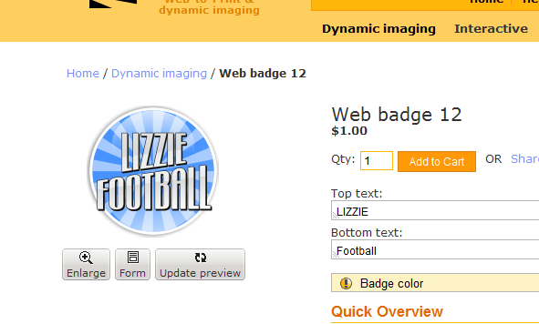

<?xml version="1.0" encoding="UTF-8"?><rss version="2.0"
	xmlns:content="http://purl.org/rss/1.0/modules/content/"
	xmlns:wfw="http://wellformedweb.org/CommentAPI/"
	xmlns:dc="http://purl.org/dc/elements/1.1/"
	xmlns:atom="http://www.w3.org/2005/Atom"
	xmlns:sy="http://purl.org/rss/1.0/modules/syndication/"
	xmlns:slash="http://purl.org/rss/1.0/modules/slash/"
	>

<channel>
	<title>Bugs and fixes &#8211; On web to print sofware, solutions and hosted services</title>
	<atom:link href="http://www.zetaprints.com/blog/category/bugs-and-fixes/feed/" rel="self" type="application/rss+xml" />
	<link>http://www.zetaprints.com/blog</link>
	<description>From web to print and everything in between</description>
	<lastBuildDate>Fri, 02 Aug 2013 10:44:32 +0000</lastBuildDate>
	<language>en-US</language>
	<sy:updatePeriod>hourly</sy:updatePeriod>
	<sy:updateFrequency>1</sy:updateFrequency>
	<generator>https://wordpress.org/?v=4.4.1</generator>
	<item>
		<title>Web-to-print profiles fix after upgrading to Magento 1.7</title>
		<link>http://www.zetaprints.com/blog/2012/09/09/web-to-print-profiles-fix-after-upgrading-to-magento-1-7/</link>
		<comments>http://www.zetaprints.com/blog/2012/09/09/web-to-print-profiles-fix-after-upgrading-to-magento-1-7/#respond</comments>
		<pubDate>Sun, 09 Sep 2012 21:26:15 +0000</pubDate>
		<dc:creator><![CDATA[admin]]></dc:creator>
				<category><![CDATA[Bugs and fixes]]></category>

		<guid isPermaLink="false">http://www.zetaprints.com/blog/?p=1090</guid>
		<description><![CDATA[Magento has a bug where it doesn&#8217;t copy over the existing profiles after an upgrade to version 1.7. Follow these instructions to manually insert the necessary code via Magento admin interface and restore your web-to-print import functionality. ZetaPrints web-to-print templates synchronization &#60;action type="webtoprint/templates-synchronization" method="parse" /&#62; &#60;action type="webtoprint/products-updating" method="map" /&#62; ZetaPrints web-to-print catalogues creation &#60;action type="webtoprint/catalogues-creation" [&#8230;]]]></description>
				<content:encoded><![CDATA[<p>Magento has a bug where it doesn&#8217;t copy over the existing profiles after an upgrade to version 1.7.</p>
<p>Follow these instructions to manually insert the necessary code via Magento admin interface and restore your web-to-print import functionality.</p>
<h3>ZetaPrints web-to-print templates synchronization</h3>
<pre>&lt;action type="webtoprint/templates-synchronization" method="parse" /&gt;
&lt;action type="webtoprint/products-updating" method="map" /&gt;</pre>
<h3>ZetaPrints web-to-print catalogues creation</h3>
<pre>&lt;action type="webtoprint/catalogues-creation" method="parse" /&gt;</pre>
<h3>ZetaPrints virtual products creation</h3>
<pre>&lt;action type="webtoprint/products-creation" method="map" product-type="virtual" /&gt;</pre>
<h3>ZetaPrints simple products creation</h3>
<pre>&lt;action type="webtoprint/products-creation" method="map" product-type="simple" /&gt;</pre>
<p>&nbsp;</p>
]]></content:encoded>
			<wfw:commentRss>http://www.zetaprints.com/blog/2012/09/09/web-to-print-profiles-fix-after-upgrading-to-magento-1-7/feed/</wfw:commentRss>
		<slash:comments>0</slash:comments>
		</item>
		<item>
		<title>Stable web-to-print extension release to be updated</title>
		<link>http://www.zetaprints.com/blog/2012/03/15/stable-web-to-print-extension-release-to-be-updated/</link>
		<comments>http://www.zetaprints.com/blog/2012/03/15/stable-web-to-print-extension-release-to-be-updated/#respond</comments>
		<pubDate>Thu, 15 Mar 2012 11:30:24 +0000</pubDate>
		<dc:creator><![CDATA[admin]]></dc:creator>
				<category><![CDATA[Bugs and fixes]]></category>

		<guid isPermaLink="false">http://www.zetaprints.com/blog/?p=1048</guid>
		<description><![CDATA[Our recent stable release v. 2.1.0.0 of Magento Web-to-Print extension is a bit of a flop. It seems to work fine, but we didn&#8217;t think through the new set of buttons under the preview. We are working on an update to simplify it, remove unnecessary buttons and allow the good old one button control as [&#8230;]]]></description>
				<content:encoded><![CDATA[<p>Our recent stable release v. 2.1.0.0 of Magento Web-to-Print extension is a bit of a flop.</p>
<p>It seems to work fine, but we didn&#8217;t think through the new set of buttons under the preview.</p>
<p><a href="../../../wp-content/uploads/2012/03/Stable-w2p-rollback.png"></a></p>
<p>We are working on an update to simplify it, remove unnecessary buttons and allow the good old one button control as an alternative. </p>
]]></content:encoded>
			<wfw:commentRss>http://www.zetaprints.com/blog/2012/03/15/stable-web-to-print-extension-release-to-be-updated/feed/</wfw:commentRss>
		<slash:comments>0</slash:comments>
		</item>
		<item>
		<title>Overcharging for web-to-print</title>
		<link>http://www.zetaprints.com/blog/2012/02/19/overcharging-for-web-to-print/</link>
		<comments>http://www.zetaprints.com/blog/2012/02/19/overcharging-for-web-to-print/#respond</comments>
		<pubDate>Sun, 19 Feb 2012 10:21:08 +0000</pubDate>
		<dc:creator><![CDATA[admin]]></dc:creator>
				<category><![CDATA[Bugs and fixes]]></category>
		<category><![CDATA[Payments]]></category>

		<guid isPermaLink="false">http://www.zetaprints.com/blog/?p=1022</guid>
		<description><![CDATA[Our Magento web-to-print extension versions prior to 2.0.1.0beta5 generate output pdf/jpg files and bill for the order regardless of the payment result in Magento. It led to some of our customers facing bills much more than they expected. E.g., an order was placed, files generated, no payment from the customer, but it was still billed [&#8230;]]]></description>
				<content:encoded><![CDATA[<p>Our <a title="web-to-print software" href="../../../../magento-web-to-print/">Magento web-to-print extension</a> versions prior to 2.0.1.0beta5 generate output pdf/jpg files and bill for the order regardless of the payment result in Magento. It led to some of our customers facing bills much more than they expected. E.g., an order was placed, files generated, no payment from the customer, but it was still billed for at ZP end.<span id="more-1022"></span></p>
<h3>Solution 1: Express checkout</h3>
<p>Web-to-print sites with credit card payments via PayPal can switch to <a title="About PayPal express" href="https://cms.paypal.com/us/cgi-bin/?cmd=_render-content&content_ID=developer/e_howto_api_ECGettingStarted">PayPal Express</a> option. There will be no orders generated in Magento unless the customer pays. The disadvantage is that you may want to accept the order and chase the customer for the payment or offer an alternative method. So it&#8217;s better to get the order and see if you can get paid later. Still, it&#8217;s a quick fix without updating the web-to-print extension.</p>
<h3>Solution 2: upgrade ZP web-to-print extension</h3>
<p>The latest beta release 2.0.1.0beta5 has some important changes to the way ZetaPrints generates orders.</p>
<p><strong>We added a new configuration parameter on our web-to-print configuration page.</strong> The ZP order will remain as <em>Saved</em> and not billed for until the payment is confirmed in Magento or manually generated in ZP.</p>
<p><a href="../../../wp-content/uploads/2012/02/web-to-print-payments.png"></a></p>
<p><strong>We also changed the way the code responds to <a title="Details on web-to-print / paypal events" href="http://code.google.com/p/magento-w2p/wiki/PaypalPaymentMethods">internal Magento events</a>.</strong> It should solve the problem with third party payment extensions. We definitely know there problems with customers in Chile, Netherlands, Belgium, Germany and some others. Please, upgrade and let us know if we still don&#8217;t play nice with your payments extension.</p>
<h2>Free web-to-print upgrade service</h2>
<p>We are happy to provide a free upgrade service to any affected customers. Please, <a title="Contact ZetaPrints" href="mailto:support@zetaprints.com">let us know</a> your situation.</p>
<p><strong>Thank you everyone for your patience with us.</strong></p>
<p>&nbsp;</p>
<p>&nbsp;</p>
]]></content:encoded>
			<wfw:commentRss>http://www.zetaprints.com/blog/2012/02/19/overcharging-for-web-to-print/feed/</wfw:commentRss>
		<slash:comments>0</slash:comments>
		</item>
		<item>
		<title>Billing for unpaid web-to-print orders in Magento</title>
		<link>http://www.zetaprints.com/blog/2012/01/17/billing-for-unpaid-web-to-print-orders-in-magento/</link>
		<comments>http://www.zetaprints.com/blog/2012/01/17/billing-for-unpaid-web-to-print-orders-in-magento/#respond</comments>
		<pubDate>Wed, 18 Jan 2012 02:45:49 +0000</pubDate>
		<dc:creator><![CDATA[admin]]></dc:creator>
				<category><![CDATA[Bugs and fixes]]></category>

		<guid isPermaLink="false">http://www.zetaprints.com/blog/?p=1007</guid>
		<description><![CDATA[We noticed that if a PayPal or some other hosted gateway payment is canceled Magento still goes through the checkout, but leaves the web-to-print order as &#8220;pending&#8221;. The problem is that our web-to-print code doesn&#8217;t differentiate by status &#8211; anything that goes through the checkout is processed by ZP, PDF files generated and the billing [&#8230;]]]></description>
				<content:encoded><![CDATA[<p>We noticed that if a PayPal or some other hosted gateway payment is canceled Magento still goes through the checkout, but leaves the web-to-print order as &#8220;pending&#8221;. The problem is that our web-to-print code doesn&#8217;t differentiate by status &#8211; anything that goes through the checkout is processed by ZP, PDF files generated and the billing flag is set.</p>
<p>We cannot charge customers for web-to-print orders they don&#8217;t need, so an update is coming in the next few days. See our <a title="web-to-print issues" href="http://code.google.com/p/magento-w2p/issues/detail?id=738">issue tracking</a> for more details.</p>
<p>The other option is to install an SSL certificate and process credit cards right on your website.</p>
<p>Contact us if your web-to-print site is being affected by this issue. We should be able to remove those web-to-print orders from your billing. This was never our intention to charge for unpaid orders.</p>
]]></content:encoded>
			<wfw:commentRss>http://www.zetaprints.com/blog/2012/01/17/billing-for-unpaid-web-to-print-orders-in-magento/feed/</wfw:commentRss>
		<slash:comments>0</slash:comments>
		</item>
		<item>
		<title>Multipage web-to-print performance improvements</title>
		<link>http://www.zetaprints.com/blog/2011/11/14/multipage-web-to-print-performance-improvements/</link>
		<comments>http://www.zetaprints.com/blog/2011/11/14/multipage-web-to-print-performance-improvements/#respond</comments>
		<pubDate>Mon, 14 Nov 2011 10:43:49 +0000</pubDate>
		<dc:creator><![CDATA[admin]]></dc:creator>
				<category><![CDATA[Bugs and fixes]]></category>

		<guid isPermaLink="false">http://www.zetaprints.com/blog/?p=902</guid>
		<description><![CDATA[We made a significant change how large multipage web-to-print templates are handled at the back end. It was a bit of a weak spot for us. For example a 12-page web-to-print calendar was too slow as the user progressed through the page. Not any more. There is no difference processing page 1 or page 12 [&#8230;]]]></description>
				<content:encoded><![CDATA[<p>We made a significant change how large multipage web-to-print templates are handled at the back end. It was a bit of a weak spot for us. For example a 12-page web-to-print calendar was too slow as the user progressed through the page. Not any more. There is no difference processing page 1 or page 12 or page 20.</p>
<p>PDF generation got a wee bit faster too.</p>
<p>Time to get serious about web-to-print calendars. Let us know if your web-to-print templates are still not fast enough or simply time out. We will try to make them work.</p>
]]></content:encoded>
			<wfw:commentRss>http://www.zetaprints.com/blog/2011/11/14/multipage-web-to-print-performance-improvements/feed/</wfw:commentRss>
		<slash:comments>0</slash:comments>
		</item>
		<item>
		<title>Datasets in web-to-print templates</title>
		<link>http://www.zetaprints.com/blog/2011/06/28/datasets-in-web-to-print-templates/</link>
		<comments>http://www.zetaprints.com/blog/2011/06/28/datasets-in-web-to-print-templates/#respond</comments>
		<pubDate>Tue, 28 Jun 2011 10:13:46 +0000</pubDate>
		<dc:creator><![CDATA[admin]]></dc:creator>
				<category><![CDATA[Bugs and fixes]]></category>
		<category><![CDATA[bugs]]></category>

		<guid isPermaLink="false">http://www.zetaprints.com/blog/?p=776</guid>
		<description><![CDATA[We had a nice web-to-print feature to let users choose their input from a table, like choosing from a database. This was done by attaching a dataset. It worked, but there was a bug so it looked as if it didn&#8217;t. Well, just letting you know we fixed it. There is no need to change [&#8230;]]]></description>
				<content:encoded><![CDATA[<p>We had a nice web-to-print feature to let users choose their input from a table, like choosing from a database. This was done by <a title="web-to-print dataset" href="../../../../help/datasets/">attaching a dataset</a>. It worked, but there was a bug so it looked as if it didn&#8217;t.</p>
<p>Well, just letting you know we fixed it. There is no need to change anything in existing web-to-print templates.</p>
<p>&nbsp;</p>
]]></content:encoded>
			<wfw:commentRss>http://www.zetaprints.com/blog/2011/06/28/datasets-in-web-to-print-templates/feed/</wfw:commentRss>
		<slash:comments>0</slash:comments>
		</item>
	</channel>
</rss>

<!-- Localized -->